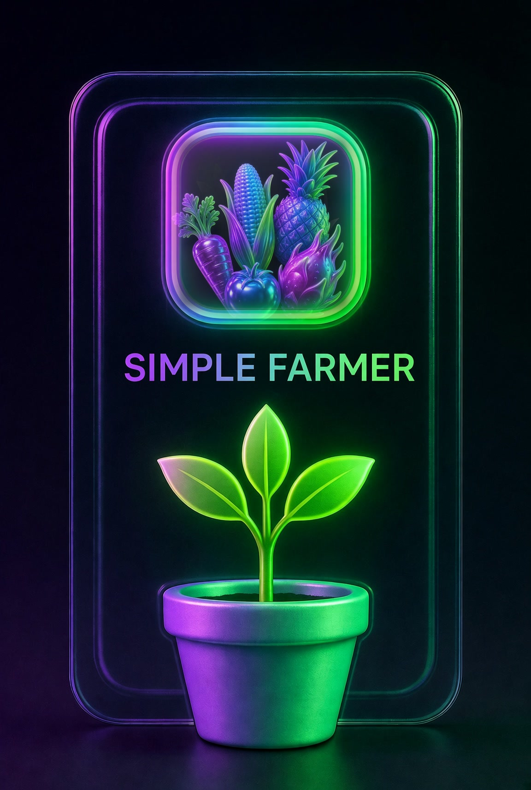
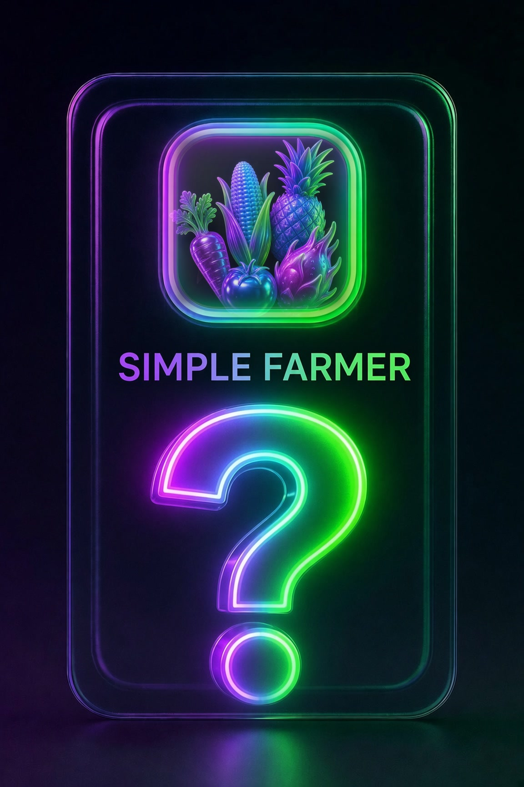
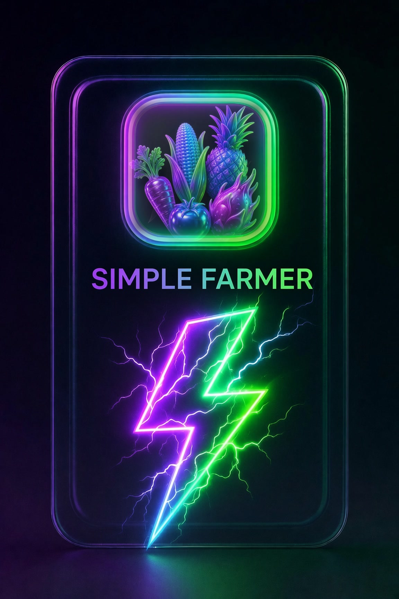
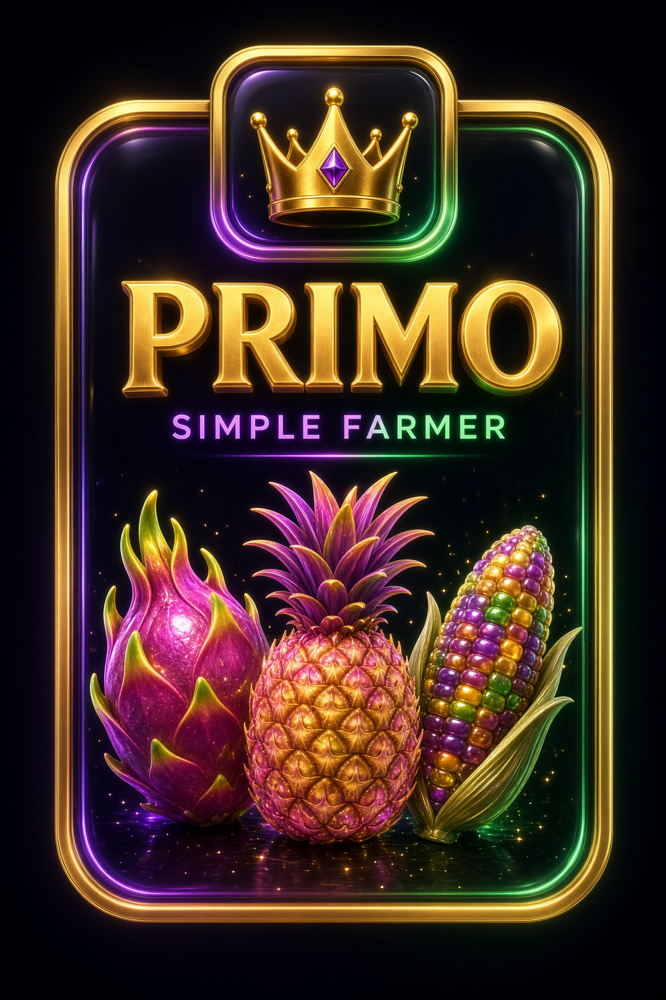

SIMPLE FARMER
Grow. Harvest. Earn.
Plant real crops, wait out the grow, cash the harvest. Runs on $GREEN — the same token every GreenLifeGame title shares — inside its own farm economy, built as the easy on-ramp to the whole platform.
The easy way onto the GLG platform.
Simple Farmer strips play-to-earn farming down to the essentials: buy in, plant, water, harvest, earn $GREEN. No breeding trees, no combine bench, no PvP — just a clean, honest grow loop. It's the Easy tier of the GreenLifeGame lineup, sitting alongside GREEN LIFE's deeper Cannabis economy and the platform's future Medium/Advanced/Professional/Degen titles — same $GREEN token, its own fully separate farm and referral system.
Plant → Water → Harvest → Earn.
One buy-in mints your farm and opens your starter pack right away. From there every crop you plant earns its share of the farm's payout the moment it finishes its grow cycle — pull it early and you forfeit the grow, so the patient play wins.
Rip a pack
Seed, Mystery, Booster, or the premium PRIMO pack — every pull is a real crop card, weighted by rarity, with odds shown up front.
Plant & water
Drop a card into an open plot. Crops need water to finish — let one dry out too long and the grow is lost.
Harvest
Let the cycle finish and claim the full $GREEN payout. Boost items and a higher-tier garden both push it further.
Same payout, your choice of speed.
Simple Farmer's answer to grow tents and auto pods: five ground types, 1× up to a 100× ☢️ Toxic Area. A higher tier multiplies a crop's power up and cuts its grow time down by the exact same factor — one harvest pays the same either way. What changes is throughput: a faster tier finishes more cycles in the same stretch of real time, so total earnings scale with the multiplier you choose to farm at.
1X Garden
Free ground. Every farm level opens 4 more plots at no cost — the steady starting base.
2X Garden
Double power, half the wait. 3 plots unlock per farm level.
5X Garden
Five times the pace. 2 plots unlock per farm level.
10X Garden
Serious ground. 1 plot unlocks per farm level.
Toxic Area
100× power, 1/100th the wait. One plot. Ever.
16 crops, every one hand-crafted.
From a humble Potato to the god-tier Yubari King Melon — four rarity tiers, four crops each, veggies and fruit sharing one pool per tier. Inside a tier, the lower-power card is always the more common pull.
 Potato
Potato Banana
Banana Carrot
Carrot Orange
Orange Cucumber
Cucumber Apple
Apple Tomato
Tomato Mango
Mango Brussel Sprouts
Brussel Sprouts Kiwano
Kiwano Romanesco Broccoli
Romanesco Broccoli Dragon Fruit
Dragon Fruit Ghost Pepper
Ghost Pepper Pink Pineapple
Pink Pineapple Glass Gem Corn
Glass Gem Corn Yubari King Melon
Yubari King Melon5 boosts to push a plot further.
One active boost per plot, matching the rarity ladder every other card uses. A boost lasts exactly as long as that plot's own harvest cycle — plant a faster garden tier and the boost keeps pace with it.
 Compost
Compost Scarecrow
Scarecrow Drip Line
Drip Line Beehive
Beehive Solar Array
Solar ArrayRip a pack, watch the reveal.
Four pack types, each with its own cinematic rip-and-reveal — same production values as GREEN LIFE's pack openings, tuned for Simple Farmer's own crop and boost tables.

Seed Pack
Mystery Pack
Booster Pack
PRIMO PackSame platform guarantees, an easier game.
One shared token
$GREEN is the currency across every GreenLifeGame title — the same fixed-supply, deflationary token GREEN LIFE runs on.
Fully separate economy
Simple Farmer's farm, referral chain, and payouts are built and tracked independently of every other GLG game — nothing crosses over but the token and the brand.
Invite-only, same referral math
3% / 1% / 0.01% across three referrer levels, credited only once a friend actually activates — never on signup alone.
Built for Easy
No breeding, no PvP, no combine bench — just plant, water, harvest. The simplest way to try play-to-earn on the GLG platform.
Simple Farmer is being built in the open.
Not live for real players yet — but the build is playable right now if you want a look.